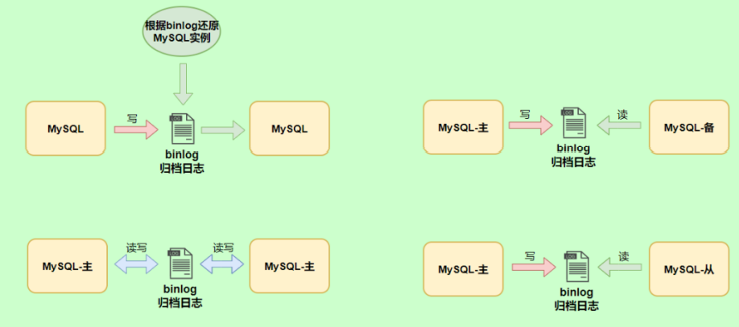

其他数据库日志

千万不要小看日志。很多看似奇怪的问题，答案往往就藏在日志里。很多情况下，只有通过查看日志才 能发现问题的原因，真正解决问题。所以，一定要学会查看日志，养成检查日志的习惯，对提升你的数 据库应用开发能力至关重要。
MySQL支持的日志
日志类型
MySQL有不同类型的日志文件，用来存储不同类型的日志，分为 二进制日志 、 错误日志 、 通用查询日志 和 慢查询日志 ，这也是常用的4种。MySQL 8又新增两种支持的日志： 中继日志 和 数据定义语句日志 。使 用这些日志文件，可以查看MySQL内部发生的事情。
这6类日志分别为：
- 慢查询日志：记录所有执行时间超过long_query_time的所有查询，方便我们对查询进行优化。
- 通用查询日志：记录所有连接的起始时间和终止时间，以及连接发送给数据库服务器的所有指令， 对我们复原操作的实际场景、发现问题，甚至是对数据库操作的审计都有很大的帮助。
- 错误日志：记录MySQL服务的启动、运行或停止MySQL服务时出现的问题，方便我们了解服务器的 状态，从而对服务器进行维护。
- 二进制日志：记录所有更改数据的语句，可以用于主从服务器之间的数据同步，以及服务器遇到故 障时数据的无损失恢复。
- 中继日志：用于主从服务器架构中，从服务器用来存放主服务器二进制日志内容的一个中间文件。 从服务器通过读取中继日志的内容，来同步主服务器上的操作。
- 数据定义语句日志：记录数据定义语句执行的元数据操作。
除二进制日志外，其他日志都是 文本文件 。默认情况下，所有日志创建于 MySQL数据目录 中。
日志的弊端
- 日志功能会
降低MySQL数据库的性能。例如，在查询非常频繁的MySQL数据库系统中，如果开启了通用查询日志和慢查询日志，MySQL数据库会花费很多时间记录日志。 - 日志会
占用大量的磁盘空间。对于用户量非常大，操作非常频繁的数据库，日志文件需要的存储空间设置比数据库文件需要的存储空间还要大。
慢查询日志(slow query log)
通用查询日志(general query log)
通用查询日志用来 记录用户的所有操作 ，包括启动和关闭MySQL服务、所有用户的连接开始时间和截止 时间、发给 MySQL 数据库服务器的所有 SQL 指令等。当我们的数据发生异常时，查看通用查询日志， 还原操作时的具体场景，可以帮助我们准确定位问题。
问题场景
查看当前状态
1 | mysql> SHOW VARIABLES LIKE '%general%'; |
启动日志
方式1：永久性方式
修改my.cnf或者my.ini配置文件来设置。在[mysqld]组下加入log选项，并重启MySQL服务。格式如下：
1 | [mysqld] |
如果不指定目录和文件名，通用查询日志将默认存储在MySQL数据目录中的hostname.log文件中， hostname表示主机名。
方式2：临时性方式
1 | SET GLOBAL general_log=on; # 开启通用查询日志 |
1 | SET GLOBAL general_log_file=’path/filename’; # 设置日志文件保存位置 |
对应的，关闭操作SQL命令如下：
1 | SET GLOBAL general_log=off; # 关闭通用查询日志 |
查看设置后情况：
1 | SHOW VARIABLES LIKE 'general_log%'; |
查看日志
通用查询日志是以 文本文件 的形式存储在文件系统中的，可以使用 文本编辑器 直接打开日志文件。每台 MySQL服务器的通用查询日志内容是不同的。
- 在Windows操作系统中，使用文本文件查看器；
- 在Linux系统中，可以使用vi工具或者gedit工具查看；
- 在Mac OSX系统中，可以使用文本文件查看器或者vi等工具查看。
从 SHOW VARIABLES LIKE 'general_log%'; 结果中可以看到通用查询日志的位置。
1 | /usr/sbin/mysqld, Version: 8.0.26 (MySQL Community Server - GPL). started with: |
在通用查询日志里面，我们可以清楚地看到，什么时候开启了新的客户端登陆数据库，登录之后做了什么 SQL 操作，针对的是哪个数据表等信息。
停止日志
方式1：永久性方式
修改 my.cnf 或者 my.ini 文件，把[mysqld]组下的 general_log 值设置为 OFF 或者把general_log一项 注释掉。修改保存后，再重启MySQL服务 ，即可生效。
举例1：
1 | [mysqld] |
举例2：
1 | [mysqld] |
方式2：临时性方式
使用SET语句停止MySQL通用查询日志功能：
1 | SET GLOBAL general_log=off; |
查询通用日志功能：
1 | SHOW VARIABLES LIKE 'general_log%'; |
删除\刷新日志
如果数据的使用非常频繁，那么通用查询日志会占用服务器非常大的磁盘空间。数据管理员可以删除很长时间之前的查询日志，以保证MySQL服务器上的硬盘空间。
手动删除文件
1 | SHOW VARIABLES LIKE 'general_log%'; |
可以看出，通用查询日志的目录默认为MySQL数据目录。在该目录下手动删除通用查询日志 atguigu01.log
使用如下命令重新生成查询日志文件，具体命令如下。刷新MySQL数据目录，发现创建了新的日志文 件。前提一定要开启通用日志。
1 | mysqladmin -uroot -p flush-logs |
如果希望备份旧的通用查询日志，就必须先将旧的日志文件复制出来或者改名，然后执行上面的mysqladmin命令。正确流程如下：
1 | cd mysql-data-directory # 输入自己的通用日志文件所在目录 |
错误日志(error log)
启动日志
在MySQL数据库中，错误日志功能是 默认开启 的。而且，错误日志 无法被禁止 。
默认情况下，错误日志存储在MySQL数据库的数据文件夹下，名称默认为 mysqld.log （Linux系统）或 hostname.err （mac系统）。如果需要制定文件名，则需要在my.cnf或者my.ini中做如下配置：
1 | [mysqld] |
修改配置项后，需要重启MySQL服务以生效。
查看日志
MySQL错误日志是以文本文件形式存储的，可以使用文本编辑器直接查看。
查询错误日志的存储路径：
1 | mysql> SHOW VARIABLES LIKE 'log_err%'; |
执行结果中可以看到错误日志文件是mysqld.log，位于MySQL默认的数据目录下。

删除\刷新日志
对于很久以前的错误日志，数据库管理员查看这些错误日志的可能性不大，可以将这些错误日志删除， 以保证MySQL服务器上的 硬盘空间 。MySQL的错误日志是以文本文件的形式存储在文件系统中的，可以 直接删除 。
第一步（方式1）：删除操作
1
rm -f /var/lib/mysql/mysqld.log
在运行状态下删除错误日志文件后，MySQL并不会自动创建日志文件。
第一步（方式2）：重命名文件
1
mv /var/log/mysqld.log /var/log/mysqld.log.old
第二步：重建日志
1
mysqladmin -uroot -p flush-logs
可能会报错
1
2
3
4[root@atguigu01 log]# mysqladmin -uroot -p flush-logs
Enter password:
mysqladmin: refresh failed; error: 'Could not open file '/var/log/mysqld.log' for
error logging.'官网提示：

补充操作：
1 | install -omysql -gmysql -m0644 /dev/null /var/log/mysqld.log |

MySQL 8.0 新特性

小结：
通常情况下，管理员不需要查看错误日志。但是，MySQL服务器发生异常时，管理员可以从错误日志中找到发生异常的时间、原因，然后根据这些信息来解决异常。
二进制日志(bin log)
binlog可以说是MySQL中比较 重要 的日志了，在日常开发及运维过程中，经常会遇到。
binlog即binary log，二进制日志文件，也叫作变更日志（update log）。它记录了数据库所有执行的 DDL 和 DML 等数据库更新事件的语句，但是不包含没有修改任何数据的语句（如数据查询语句select、 show等）。
它以事件形式记录并保存在二进制文件中。通过这些信息，我们可以再现数据更新操作的全过程。
如果想要记录所有语句（例如，为了识别有问题的查询），需要使用通用查询日志。
binlog主要应用场景：

查看默认情况
查看记录二进制日志是否开启：在MySQL8中默认情况下，二进制文件是开启的。
1 | mysql> show variables like '%log_bin%'; |

日志参数设置
方式1：永久性方式
修改MySQL的 my.cnf 或 my.ini 文件可以设置二进制日志的相关参数：
1 | [mysqld] |

重新启动MySQL服务，查询二进制日志的信息，执行结果：
1 | mysql> show variables like '%log_bin%'; |
设置带文件夹的bin-log日志存放目录
如果想改变日志文件的目录和名称，可以对my.cnf或my.ini中的log_bin参数修改如下：
1 | [mysqld] |
注意：新建的文件夹需要使用mysql用户，使用下面的命令即可。
1 | chown -R -v mysql:mysql binlog |

方式2：临时性方式
如果不希望通过修改配置文件并重启的方式设置二进制日志的话，还可以使用如下指令，需要注意的是 在mysql8中只有 会话级别 的设置，没有了global级别的设置。
1 | # global 级别 |
查看日志
当MySQL创建二进制日志文件时，先创建一个以“filename”为名称、以“.index”为后缀的文件，再创建一 个以“filename”为名称、以“.000001”为后缀的文件。
MySQL服务 重新启动一次 ，以“.000001”为后缀的文件就会增加一个，并且后缀名按1递增。即日志文件的 个数与MySQL服务启动的次数相同；如果日志长度超过了 max_binlog_size 的上限（默认是1GB），就会创建一个新的日志文件。
查看当前的二进制日志文件列表及大小。指令如下：
1 | mysql> SHOW BINARY LOGS; |
所有对数据库的修改都会记录在binlog中。但binlog是二进制文件，无法直接查看，想要更直观的观测它就要借助mysqlbinlog命令工具了。指令如下：在查看执行，先执行一条SQL语句，如下
1 | update student set name='张三_back' where id=1; |
开始查看binlog


1 | mysqlbinlog -v "/var/lib/mysql/binlog/atguigu-bin.000002" |
前面的命令同时显示binlog格式的语句，使用如下命令不显示它
1 | mysqlbinlog -v --base64-output=DECODE-ROWS "/var/lib/mysql/binlog/atguigu-bin.000002" |
关于mysqlbinlog工具的使用技巧还有很多，例如只解析对某个库的操作或者某个时间段内的操作等。简单分享几个常用的语句，更多操作可以参考官方文档。
1 | # 可查看参数帮助 |
上面这种办法读取出binlog日志的全文内容比较多，不容易分辨查看到pos点信息，下面介绍一种更为方便的查询命令：
1 | mysql> show binlog events [IN 'log_name'] [FROM pos] [LIMIT [offset,] row_count]; |
IN 'log_name'：指定要查询的binlog文件名（不指定就是第一个binlog文件）FROM pos：指定从哪个pos起始点开始查起（不指定就是从整个文件首个pos点开始算）LIMIT [offset]：偏移量(不指定就是0)row_count:查询总条数（不指定就是所有行）
1 | mysql> show binlog events in 'atguigu-bin.000002'; |

上面我们讲了这么多都是基于binlog的默认格式，binlog格式查看
1 | mysql> show variables like 'binlog_format'; |
除此之外，binlog还有2种格式，分别是Statement和Mixed
Statement
每一条会修改数据的sql都会记录在binlog中。
优点：不需要记录每一行的变化，减少了binlog日志量，节约了IO，提高性能。
Row
5.1.5版本的MySQL才开始支持row level 的复制，它不记录sql语句上下文相关信息，仅保存哪条记录被修改。
优点：row level 的日志内容会非常清楚的记录下每一行数据修改的细节。而且不会出现某些特定情况下 的存储过程，或function，以及trigger的调用和触发无法被正确复制的问题。
Mixed
从5.1.8版本开始，MySQL提供了Mixed格式，实际上就是Statement与Row的结合。
详细情况，下章讲解。
使用日志恢复数据
如果MySQL服务器启用了二进制日志，在数据库出现意外丢失数据时，可以使用MySQLbinlog工具从指定的时间点开始（例如，最后一次备份）直到现在或另一个指定的时间点的日志中回复数据。
mysqlbinlog恢复数据的语法如下：
1 | mysqlbinlog [option] filename|mysql –uuser -ppass; |
这个命令可以这样理解：使用mysqlbinlog命令来读取filename中的内容，然后使用mysql命令将这些内容恢复到数据库中。
filename：是日志文件名。option：可选项，比较重要的两对option参数是–start-date、–stop-date 和 –start-position、– stop-position。--start-date和--stop-date：可以指定恢复数据库的起始时间点和结束时间点。--start-position和--stop-position：可以指定恢复数据的开始位置和结束位置。
注意：使用mysqlbinlog命令进行恢复操作时，必须是编号小的先恢复，例如atguigu-bin.000001必须在atguigu-bin.000002之前恢复。
详见p189，由于翻页过快，这部分没办法记录。
删除二进制日志
MySQL的二进制文件可以配置自动删除，同时MySQL也提供了安全的手动删除二进制文件的方法。 PURGE MASTER LOGS 只删除指定部分的二进制日志文件， RESET MASTER 删除所有的二进制日志文 件。具体如下：
1. PURGE MASTER LOGS：删除指定日志文件
PURGE MASTER LOGS语法如下：
1 | PURGE {MASTER | BINARY} LOGS TO ‘指定日志文件名’ |


2. RESET MASTER: 删除所有二进制日志文件

其它场景
二进制日志可以通过数据库的 全量备份 和二进制日志中保存的 增量信息 ，完成数据库的 无损失恢复 。 但是，如果遇到数据量大、数据库和数据表很多（比如分库分表的应用）的场景，用二进制日志进行数据恢复，是很有挑战性的，因为起止位置不容易管理。
在这种情况下，一个有效的解决办法是 配置主从数据库服务器 ，甚至是 一主多从 的架构，把二进制日志文件的内容通过中继日志，同步到从数据库服务器中，这样就可以有效避免数据库故障导致的数据异常等问题。